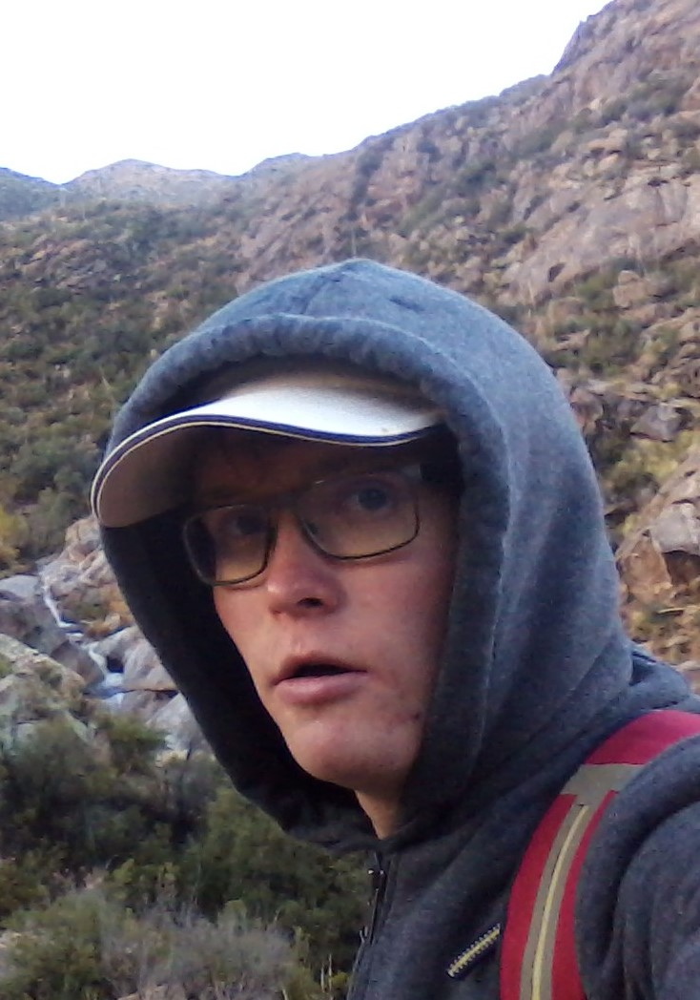

Welcome to Andrei Larsen's Home Page

Andrei Larsen
CSE Student, Arizona State University (ASU)
Tempe, Arizona, USA
Email: alarse12@asu.edu
I'm a Computer Systems Engineering student at ASU, with interest in hardware/software interaction and embedded programming. Besides being a good student, my interests include gardening and hiking. I'm pretty good at coding in C, C++, Verilog, Java, Arduino, and HTML.
Cool Class Projects
- CSE 320 - Worked with a group to design a digital audio recorder that could record and play back audio
- CSC 230 - Worked with a group to design a program in Arduino and assembly language for flight simulation
- CSC 120 - Designed a 4-bit programmable microprocessor in a logic gate simulator
Some Personal Projects
- Began to build a custom drone, using pieces of wood, screws, and zipties for the frame, and an Arduino as the controller
- Spent several months designing and building circuits for monitoring and automating different plant-care and machine-maintenance tasks using Raspberry Pi, Arduino, and TI Launchpad boards
- Expanded the CSC 120 project to a 32-bit microprocessor with added functionality such as jumping and checking conditions